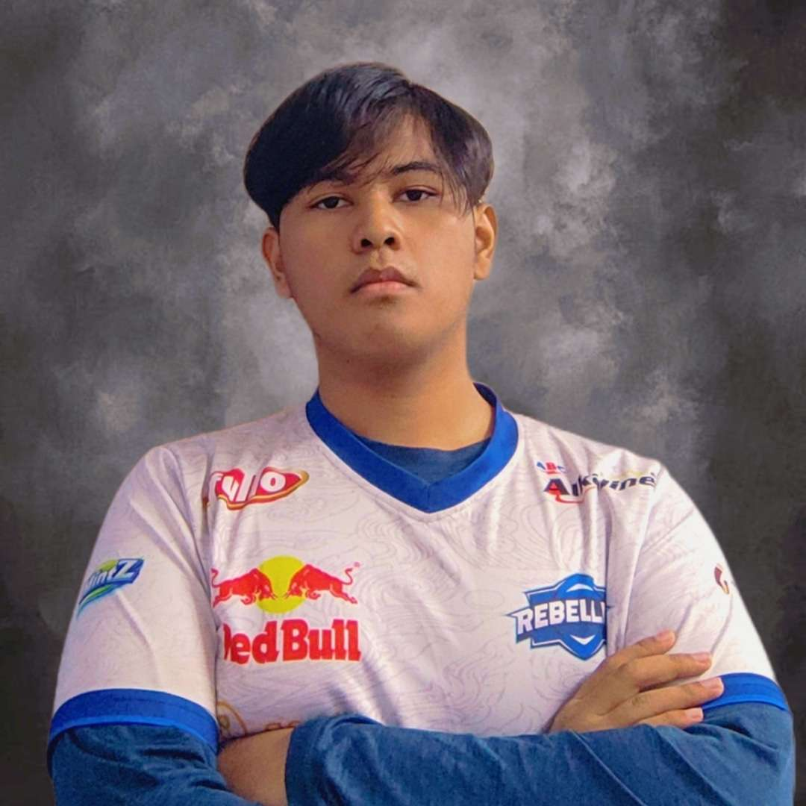

About Us
Meet Ghathfan Muhamad Afif'azfa and Kevin Fachrezy, dynamic duo of the digital realm
and passionate software engineering students currently honing their skills at UTM. With a fervent
dedication to mastering the intricacies of web programming, they embark on a journey to craft innovative
digital solutions and push the boundaries of technological possibility. Armed with a fusion of
creativity and technical prowess, they are poised to leave an indelible mark on the world of software
development.
Our Mission
Our mission is to revolutionize the digital landscape through cutting-edge web programming solutions. Fueled
by our passion for innovation and driven by a relentless pursuit of excellence, we strive to create
user-centric experiences that seamlessly blend functionality with aesthetics. With every line of code we
write, we aim to empower businesses, inspire creativity, and enrich the online experience for users
worldwide. Together, we are committed to shaping the future of the web, one project at a time
KEVIN FACHREZY
Hi everyone, my name is Kevin Fachrezy, currently Year 2 majoring in Software Engineering at University Teknologi Malaysia.
I an international student from Indonesia.
My passion is currently in the process of software engineering. I like designing, and participating in software development activities.
In the past few semesters, I have taken the role of project manager many times and for each project I participated in, I learned something new.
During my time as project manager, I meet new people both international students and local students alike which added new insight about different people and how to properly handle them.
Communication and collaboration has always been the key for success in projects involving people from different background. As such, I sometimes switched position between being a project manager and developer.
The reason as to why I choose Software Engineering as my major is because during my childhood, computer was slowly spreading to the public in Indonesia at the time. People started to have PC in their homes.
As the years progressed, computers became more advanced and I was interested in what makes this box of electronics become part of people's life and as I learned deeper, the box is more than just a box, it can help make life easier.
I knew this when I first interacted with a social media website at the time, Facebook. I quickly learned how computers can unite people that are separated by vast distance and share their stories. From their my interest in the world of computing grew even more.
Right now, I have the chance to understand deeper about web and its components. This will be a new page in my life as I delve deeper into the world of web programming and later on I might even be able to develop my own website
and perhaps, in a way, discover new things that can improve the computing world.
GHATHFAN MUHAMAD AFIFAZFA

Hello everybody, My name is Ghathfan Muhamad Afifazfa, Year 3 Software Engineering student at University Teknologi Malaysia.
I am studying abroad here, while I'm actually from Bogor, West Java, Indonesia.
Studying abroad is somekind of a challenge to me, since the feel is different from my hometown. Here, I need to understand the culture of people here to be able to communicate.
But, I were able to adapt easily since the culture aren't that different with my Country. Then, here I met a lot of amazing people. Each of them gives me inspirations and views of what should I do to become like them
The reason I'm learning Software Engineering is that I were interested on technology since I was a child. As a child, I like to play a lot of games and sometimes wonder if I
could create my own games and become a developer. But as the times goes by, currently I am more interested in designing an application interface. It also influenced by my passion
on drawing and painting.
At this semester, I am really excited to learn web programming because for the past semester I have been designing a concept website interface for my other courses using Figma.
Now what's left is that I wanted to be able to implement my Imagination of designing website UI into a code.
So that's all about me and happy learning! ^-^
.png)